The Evergreen State
Washington State is on the West side of the US. My older daughter and her family stay in Sammamish, one of the cities of Washington. This city is close to Seattle. Seattle is considered one of the rainiest places in the US. Dayton, Kelso, Kent, Olympia, Pacific, Redmond, and Sammamish are a few cities of Washington. Weather during summers is extremely good. It was quite warm and bright. The sky was clear without any clouds. We could clearly see the surrounding mountains covered by ice.
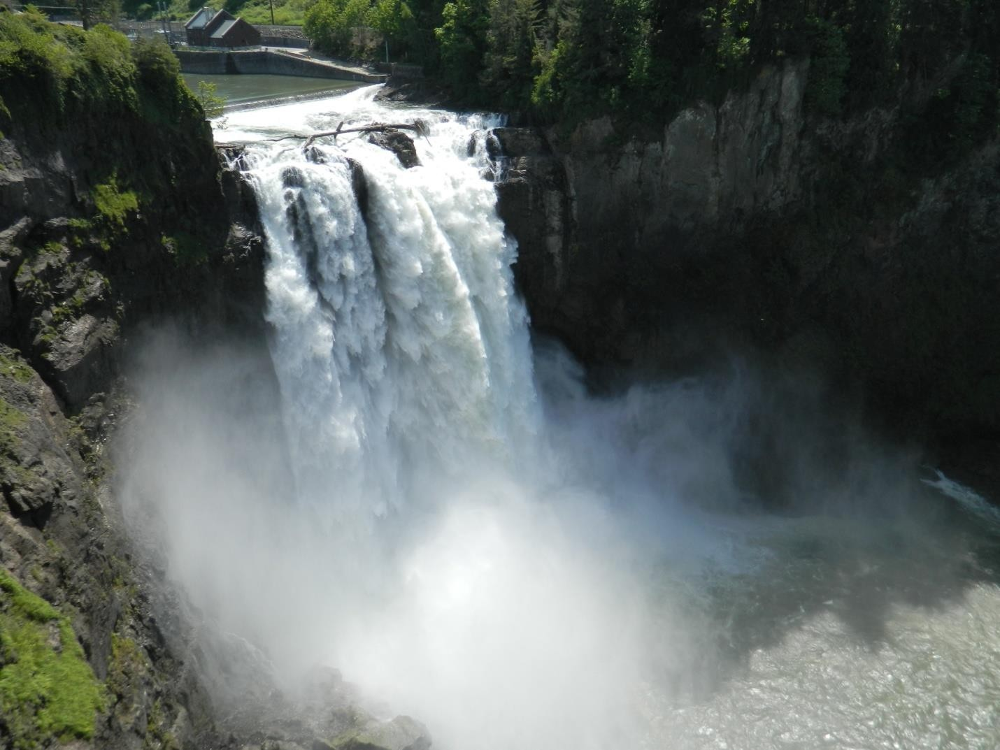
After breakfast, around 11 o’clock, we left for Snoqualmie Falls. It is about an hour's drive from home. Uma packed paratha, pickle, cakes, etc. After parking the car, we went to see the waterfalls. It is spectacular. After seeing the falls, we walked down to the river. It is about a 2 km steep walk down. Also, a hydraulic power station is here. It was pretty cool. We sat on a stone close to the riverbed. In the dense forest with bright sun and a cold breeze, it was so nice. From there, we could also see the falls. In a shaded place, we started eating our dinner. Paratha with pickle; it was too good, especially since we were hungry.
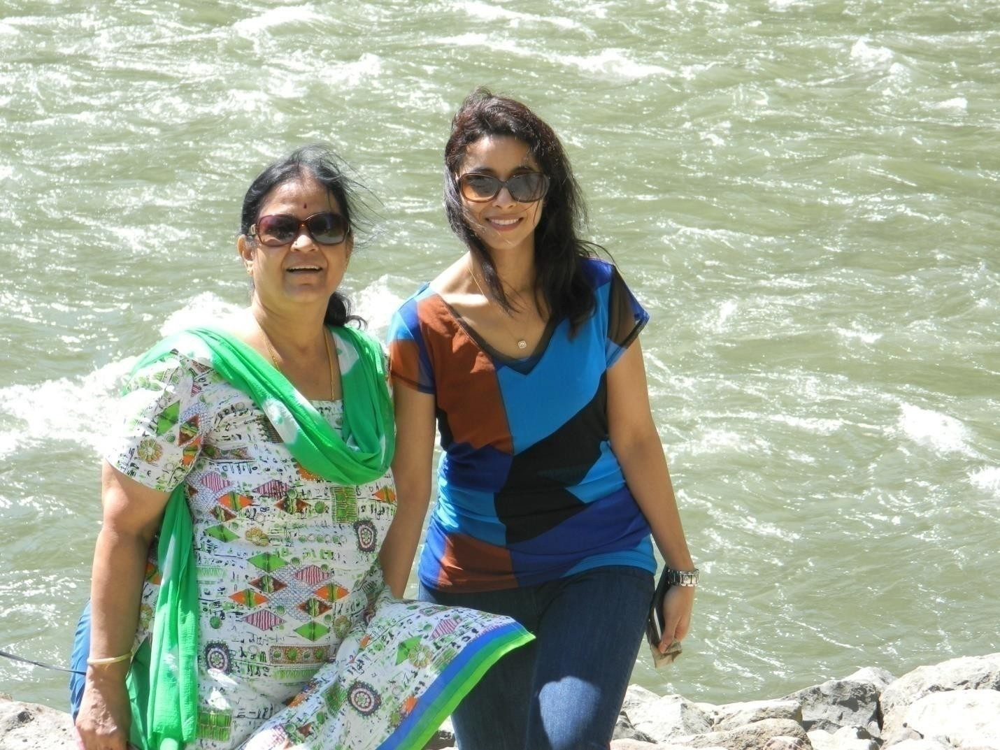
Then we started walking up to reach our parking place. While going down, we could walk easily. While returning, it was so steep, and every 10 meters we had to stop for a while to take a deep breath. Walking that distance of about 2 km, we found it very difficult, and at last, we came to the parking place and sat for a while to take a rest. After a brief rest, we started returning home. On the way, they stopped at Costco and purchased fruits, milk, cereals, etc.
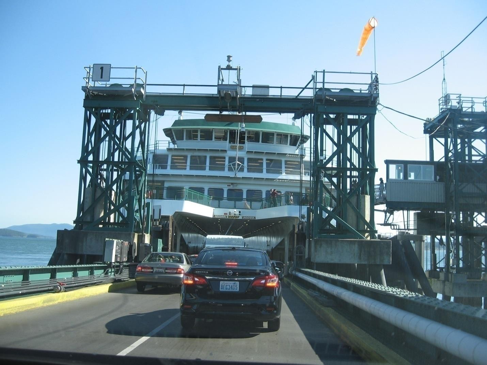
San Juan Island, Orcas Island, Shaw Island, and Lopez Island are all close to Washington State. During vacations or weekends, people from Washington State go to these islands with their cars via ferry and spend the day there, returning on the same day or after a few days. To go to these islands, one has to book tickets well in advance. Especially during weekends, there is a heavy rush for these islands. Shashi had booked tickets for visiting San Juan Island about a fortnight ago.
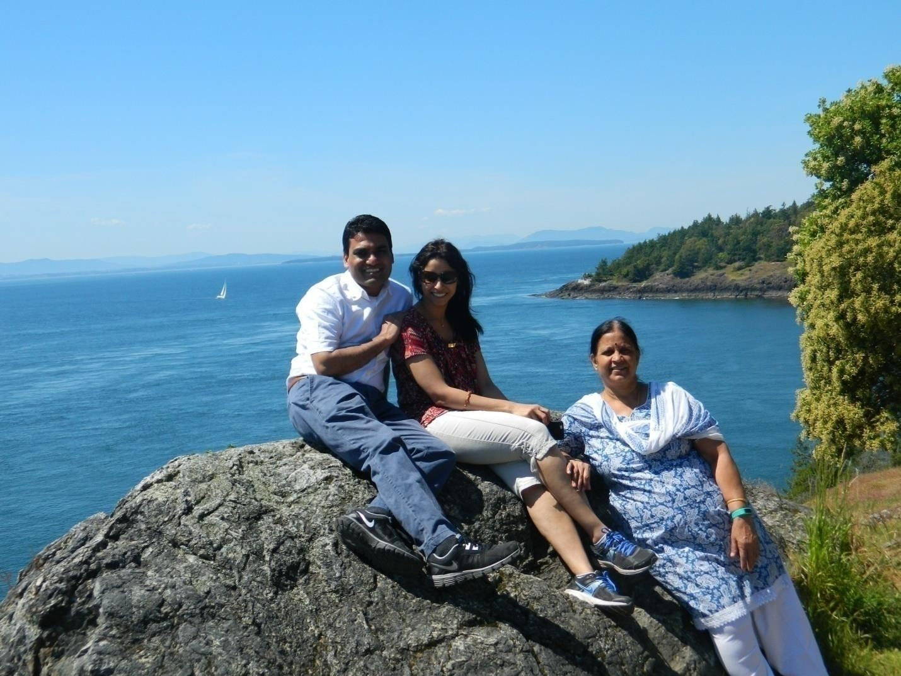
On the 27th itself, lots of preparation was done. Puliyodarai rice, mint chutney, some sweets, namkeen, etc., were packed and kept ready. On the 28th, we got up early around 5 am. Sandwiches and coffee in a flask were also taken. We left home around 6:30 am. They have two cars; one is a bigger one where eight people can travel. In that car, we left along with the eatables, fruits, playthings, etc. Anacortes is the place where the ferry deck is situated. From home, it is around a 2-hour drive. We reached this place around 8:30 am.
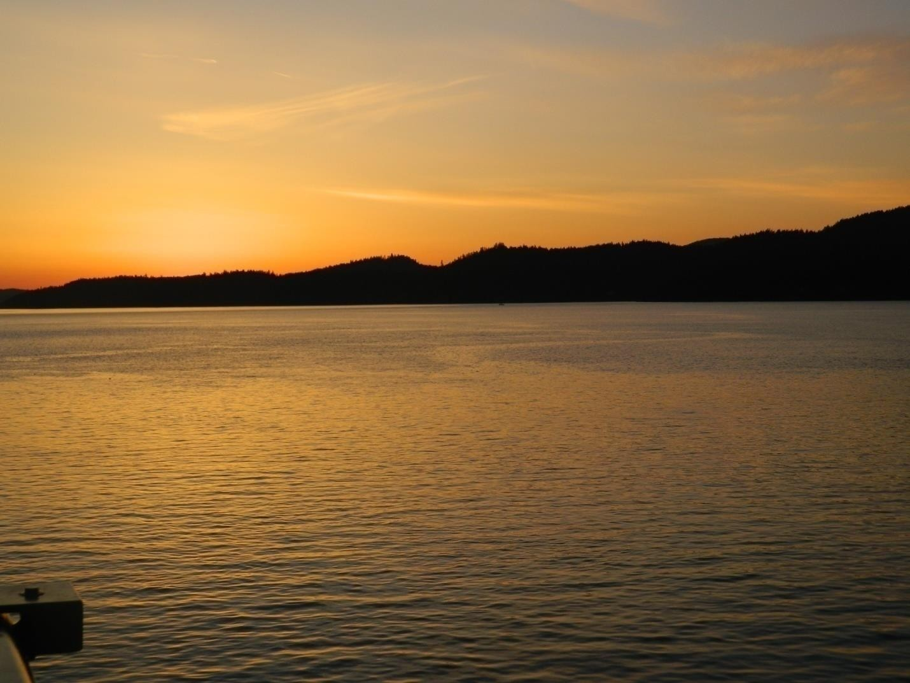
When we reached there, many were already waiting in the queue to drive their cars onto the deck of the ferry. We also waited in the queue for our turn. During that time, we took our breakfast – sandwiches and coffee. Cars are allowed inside the ferry one by one. After the check, our car was also driven inside and parked on the lowest deck.
After parking the car in the ferry, we went inside and found a comfortable place to sit. The ferry travel was about 2 hours. In the ferry, we moved around and took lots of photos. Just before reaching Friday Harbor, they announced and asked us to move to the car parking area. We went to our car and got into it. As soon as the ferry reached the port, cars moved out one by one. We also came out. The port where we landed is called Friday Harbor.
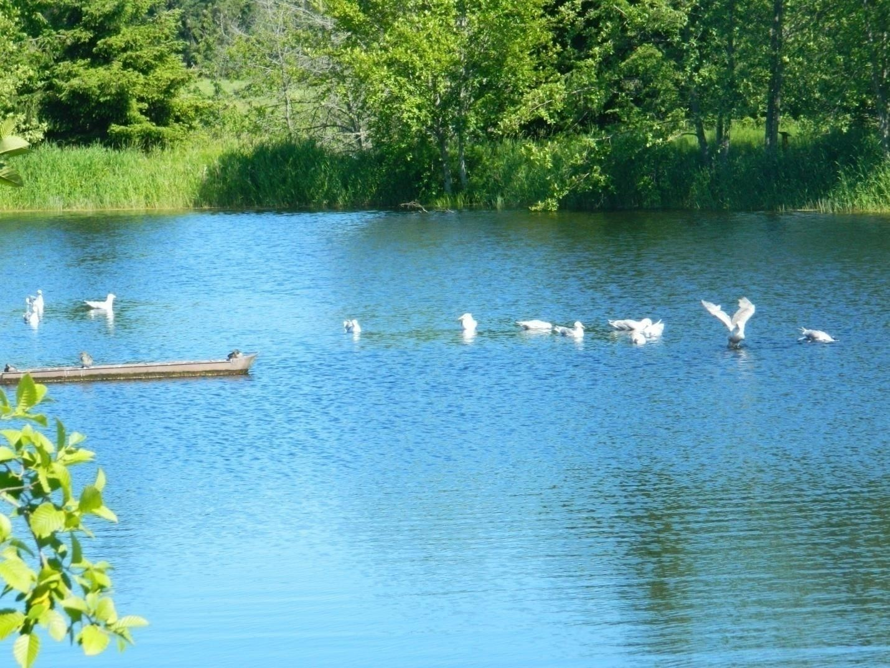
From Friday Harbor, we drove to the State Park. It is a kind of beach. Invariably, whales are seen from this beach. We sat on this beach for some 2 or 3 hours. We were not lucky enough to have a glimpse of whales. We ate our lunch and walked around the beach and saw the lighthouse. From the State Park, we proceeded to the Lavender Farm. Here, lavender plants are grown. We could see flowers only on a few plants. We could see lots of buds on many of these bushy plants. Perhaps July may be the season to visit this farm to see the complete lavender flower bed. A nursery is also here where we can buy lavender plants.
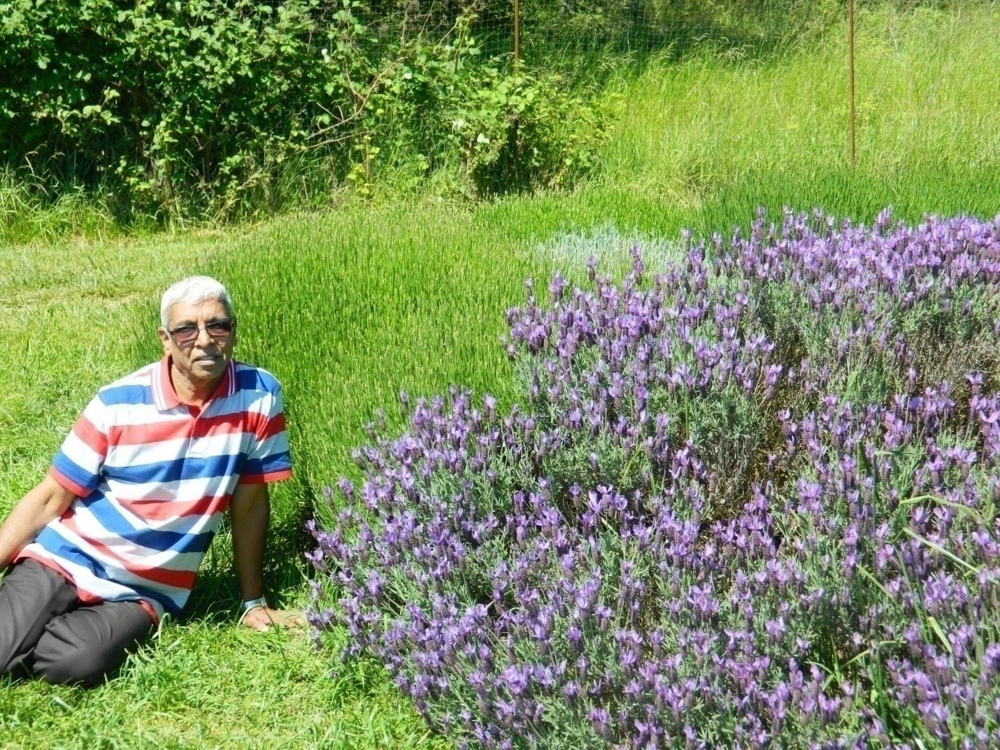
Then we went to the Sculpture Park. Here we found sculptures of different things. Some were made using stone and some were made out of wood. A beautiful pond is also there in this park. After spending some time here, we proceeded back to Friday Harbor. We were searching for a coffee shop and at last found one. Here, most of the shops close around 5. After a good coffee, we roamed around until 7:30 pm and proceeded to board the ferry. Since sunset happens after 8:30 pm, it was quite bright when we boarded the ferry. We reached Anacortes around 10 pm and reached home almost at midnight.
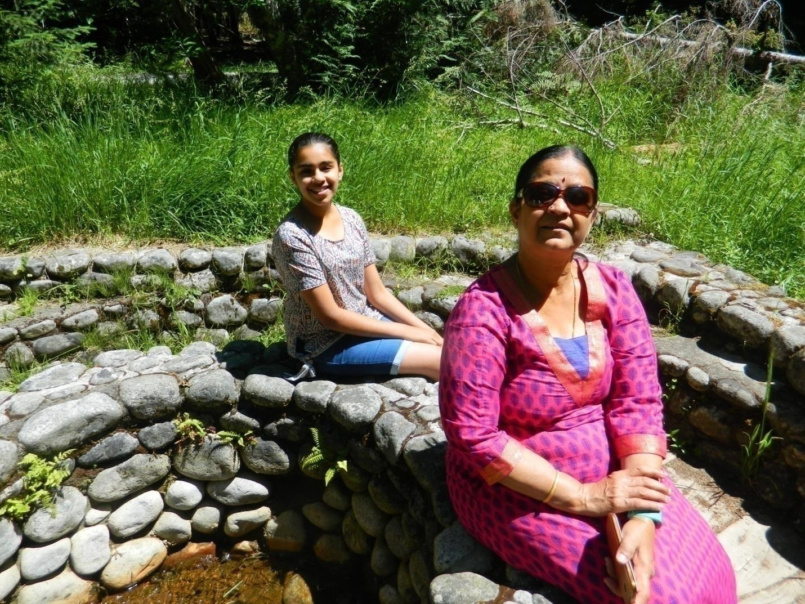
Being US Independence Day, Uma and Shashi had a holiday. It was planned, perhaps a month back, to visit Mount Rainier. Accordingly, they booked a hotel for the 4th night stay. We used to see this mountain peak as and when we drive along Sammamish Lake, a beautiful mountain covered completely in ice. This place is about a 3-hour drive from home. Uma packed lots of eatables and food for two days. We left home on the 3rd morning around 10. The weather was good and so the travel was pleasant. Before we left, we had our breakfast.

While traveling, we were eating biscuits, fruits, etc. The first point we reached was the Paradise Visitor Center. We walked in the dense woods. We saw a well where hot water was jetting out. Also, we saw a small museum. After the museum, we went to a great waterfall called Narada. It was amazing. The sprinkling of water was so huge that we became very wet. After the falls, we moved towards Mount Rainier. This is the third biggest mountain in the US on the Cascade Range in Washington State. It is an active volcano. In 1854, it erupted. This mount is fully covered by ice. The height of this mountain is 14,400 feet. Since this mountain is a miniature of Mount Everest, Everest climbers come here to train. This mountain plays an important role in providing the heaviest rain in the Seattle range. There is an information center at the base of the mountain. Lots of geographical information about this mountain is displayed here. Also, a movie is played continuously here to depict the history of this mountain, the plants around this place, different varieties of flowering plants, animals, birds, etc.
We started to climb over the mountain. The weather was very good. With the bright sun, it was quite warm, so one could walk around on the ice without any warm clothes! It was very funny. The ice was not hard like stone; it was just like fine sand. It was very slippery. With great difficulty, we walked about half a mile. Because of the slipperiness, we got scared and decided to stop further adventures and started returning. While coming down, it was more difficult. We were so tired and decided to move to the restaurant. Since Shashi had booked a cottage at a place called Mountain View, we went there. The rooms were good. Leftover lunch food was there, and Uma brought a rice cooker and rice. She prepared dahi bath. We finished our early dinner around 8 and slept by 9:30. The night was quite warm and we had to use the AC.
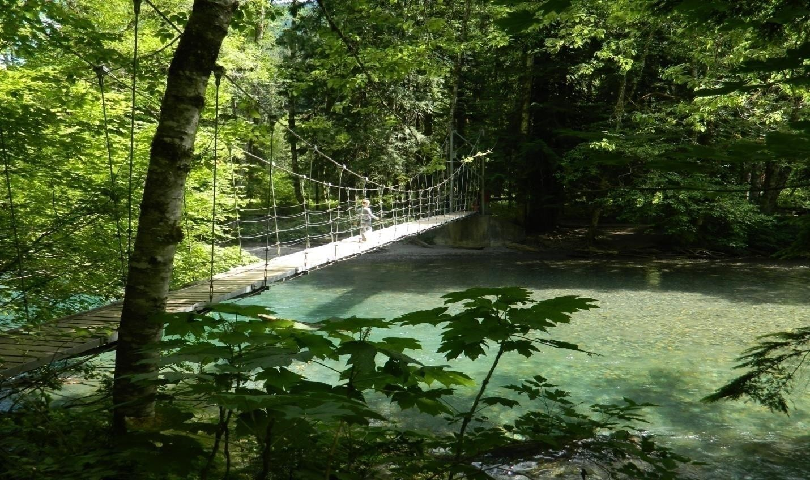
We got up late. After the hotel breakfast, we left the restaurant around 10 am. There is a very big National Park there, and many beauty spots are in this park. This area is covered with trees and plants. Lots of seasonal flower plants grow all over the place. We could see several flower beds of different flowers. It was so amazing. This area is called Paradise. From the mountain, ice melts and forms rivers and waterfalls. There is one hanging bridge over a small river, and this is one of the attractions in the National Park. Only one person is allowed to walk across the bridge at a time.
We walked through this bridge and spent some time on the riverbed. The water of the river was very chilly. Then we proceeded to Sunrise Point. This is one of the best viewpoints to see mountain peaks like Seymour Peak, Governors Ridge, Mount Adams, Tamanos Mountain, etc. After this, we went to one of the picnic spots and had our homemade lunch. In this place, we found lots of ice plains and kids started playing with the ice. They made ice balls and started throwing them at others. Then we started our return journey. It was around a 3-hour journey. Around 6 pm, we reached home safely.
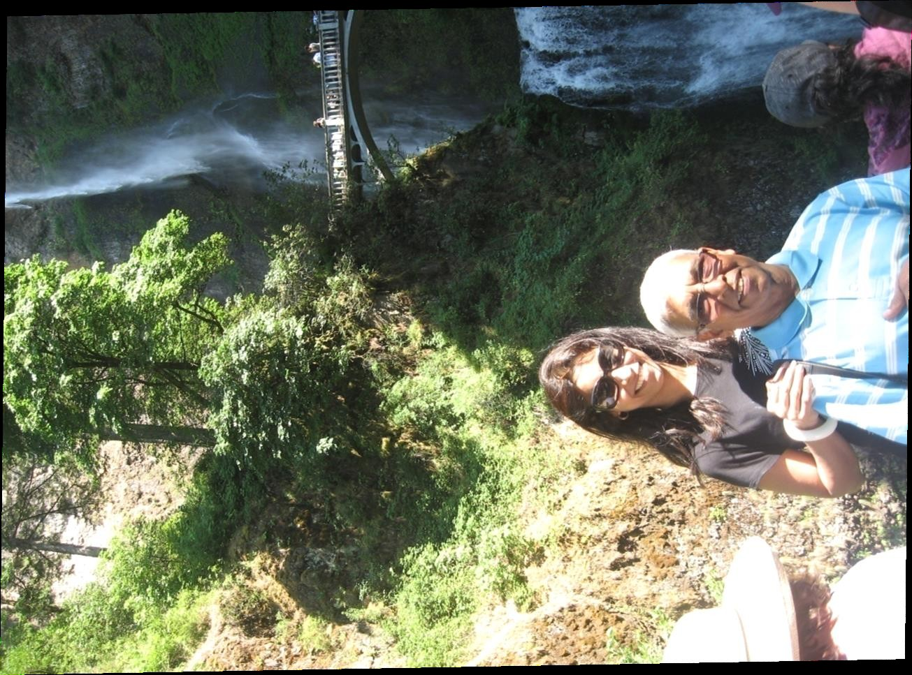
On the 14th evening, Jinu and Pavan were to come to Seattle from New York. But at the eleventh hour, their flight was cancelled and they had to make lots of changes to their plan. At last, they came to San Francisco and then to Long Beach and then reached Portland, Oregon. We left home around 9:30 am. As usual, we took lots of food material. Oregon State is between Washington State and California. This state is called the Evergreen State because three-fourths of the state is covered by dense forests. The Columbia River is between Washington State and Oregon. From Sammamish to Portland, it is about a 5-hour drive. We reached Portland airport around 2 pm. Jinu and Pavan were waiting at the airport. After picking them up, we proceeded to Mount Hood National Forest. We found a parking place and searched for a picnic spot to have our lunch.
We found a nice place with benches and tables. We finished our lunch. After lunch, we started walking towards Multnomah Falls. We walked about a mile in the dense forest area, and it was very pleasant. This waterfall is the second tallest waterfall in the USA. The first one is Yosemite Falls in California. Then we went to an ice cream stall and had ice creams. After the ice cream, we went to see Wahkeena Falls and the dam, but it was found to be closed.
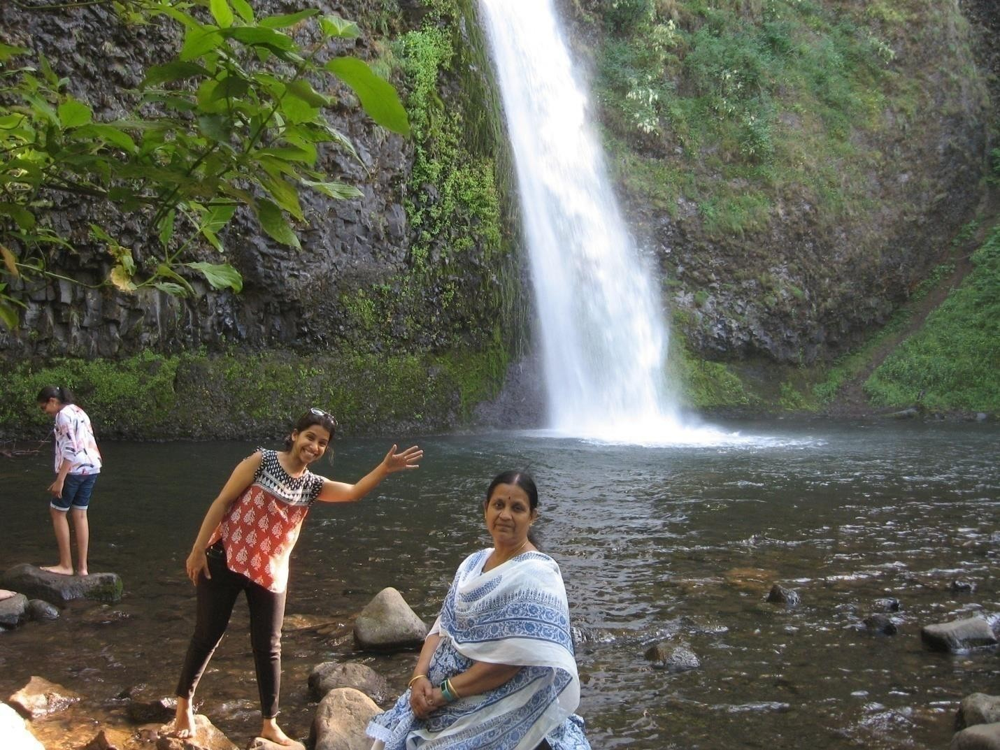
Then we went to Horsetail Falls. It was also quite tall and beautiful. The water from the waterfall was quite chilly. We were walking in the water and spent time around this waterfall. Then we proceeded to Vista House. This is another sunset point. Since the days are longer here, sunset takes place around 9 pm! So we could not wait until that time. On the way to the hotel, we stopped at an Indian restaurant called Namaste India. We found a variety of Indian food, viz. butter naan, chana masala, dal makhani, aloo mutter sabzi, samosa, pakora, salad, fried rice, raita, gulab jamun, ice cream, etc. After the lavish dinner, we went to the Hillsboro Residence Inn. The hotel was very good. Shashi had booked two rooms. The rooms were big and there were enough beds for us to sleep.
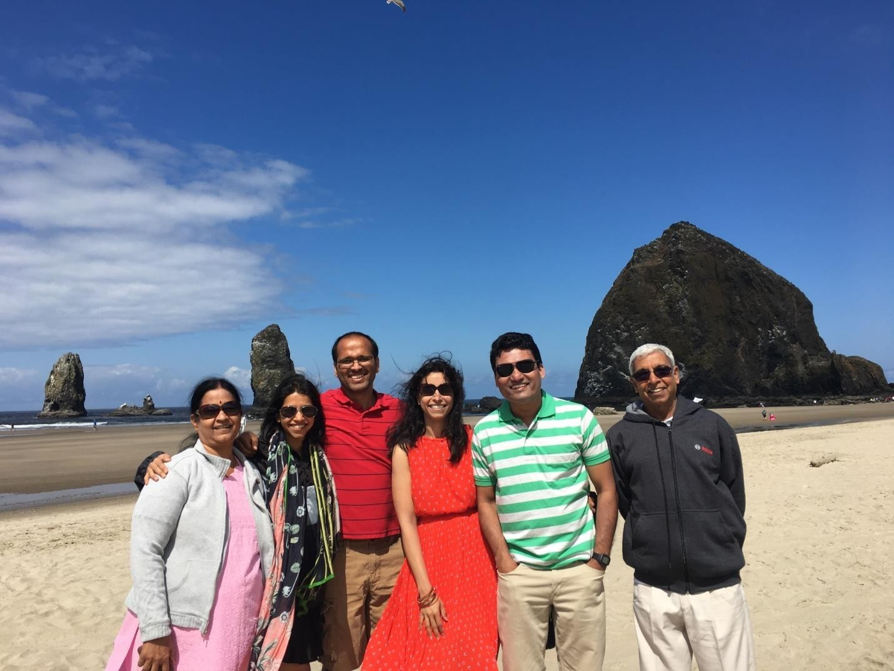
The next morning, we got up a bit late. We had our breakfast at the hotel and left around 9:30 am. This time Pavan drove the car. The weather was good. From the hotel, in an hour, we reached Cannon Beach. It was pretty chilly. We saw the beautiful Haystack Rocks on the seashore. The seawater was so chilly we could not even put our legs in for a long time. After Cannon Beach, we started moving back home. It is a long drive of around 5 hours. We searched for a Chipotle for lunch. Since we did not find one, we stopped at a Pizza Hut. After the pizza lunch, we continued our return journey. After a brief break for a cup of coffee for some 30 minutes, we reached home around 9 pm.
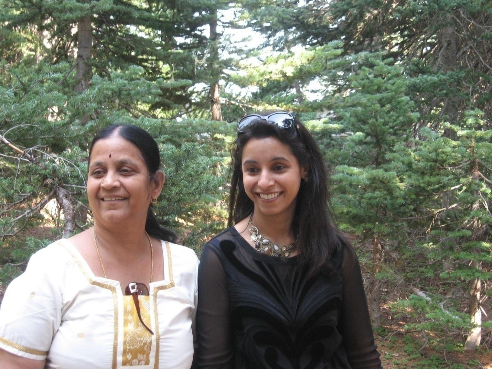
Olympic National Park is some 4 hours drive from Uma’s place. We left home around 9 am. Around 1 pm we reached Olympic National Park. We first went to Hurricane Ridge. Olympic is a mountain range having several peaks. Hurricane is one of the peaks of this range. After lunch, we just walked a mile. After the forest walk, we went to Lake Crescent.
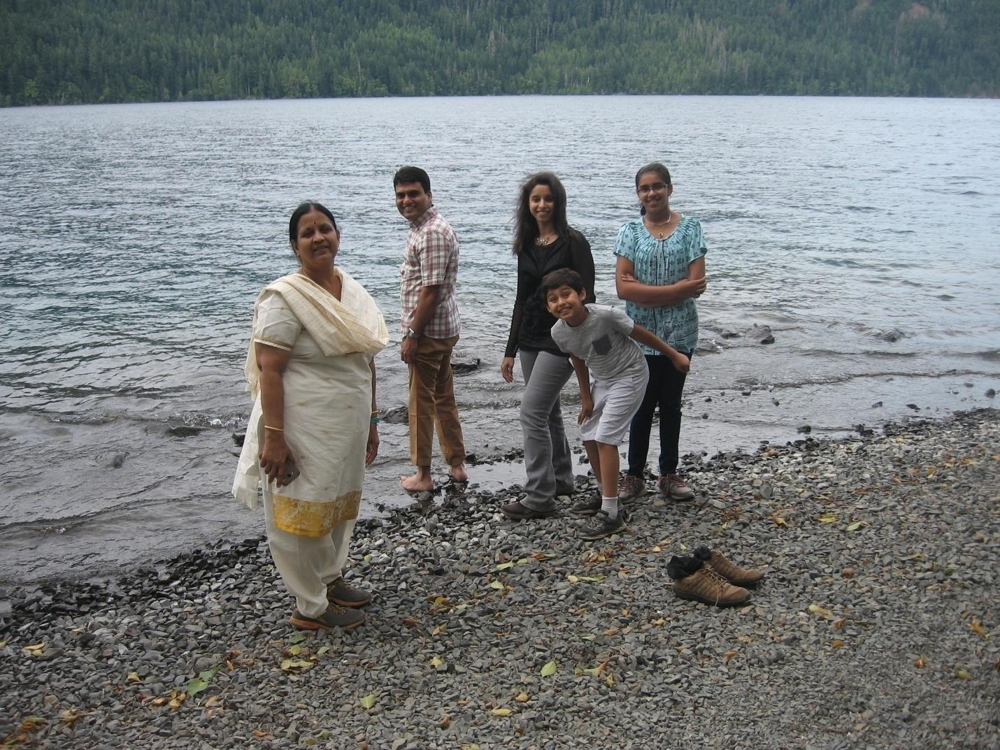
Here people come with their boats and do boating. The arrangement was so nice that one single person can shift the boat from the car trailer to the lake. After the lake, we started our long return journey. We reached Issaquah, a place close to Sammamish, around 9 pm. There is a hotel called Madras Dosa Corner. We had dinner there and returned home by 10 pm.
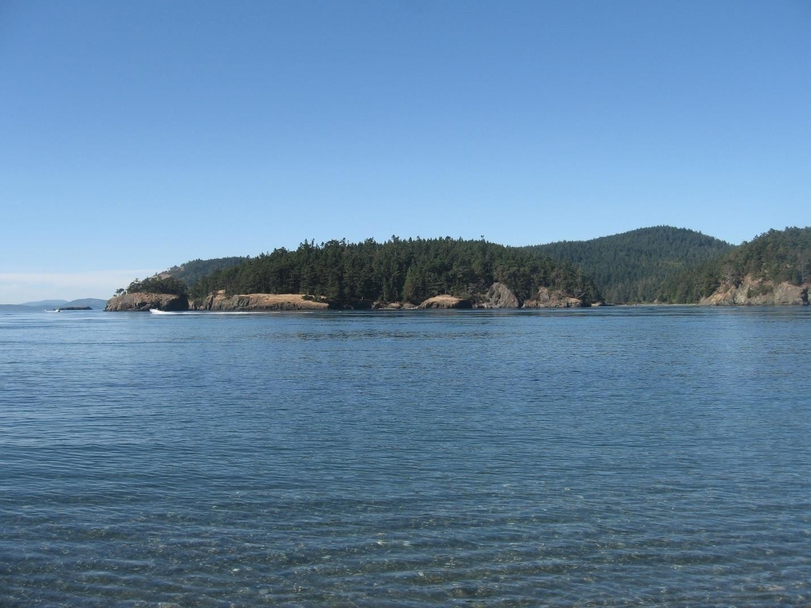
Deception Pass State Park is around a 3-hour drive from home. We left home around 10:30 am after the aarthi. After an hour's drive on the highway, we had a miraculous escape from a major accident. Ahead of our car, another car was going. Of course, Shashi was keeping a safe distance between the cars. All of a sudden, the car in front of us crashed against the car which had suddenly stopped. Actually, it was a multiple-car crash. Since the speed was moderately high, Shashi could not abruptly apply the brakes and avoid the crash. Luckily, there was no vehicle moving in the adjacent lane at that moment, and Shashi just jumped to the next lane and avoided the crash. Only our car had a big jerk. It was really an escape from a major accident. We reached Deception Pass State Park around 1 pm. In this park, there are two islands: Fidalgo Island and Whidbey Island. These islands are connected by bridges. On each island, there are different beaches. Facilities are there for boating. Adjacent to the beach is a dense forest. We can walk along the shore or go trekking. In this park, there is a tree-climbing sport facility. In a tall pine tree, safety gadgets are fixed and a trainer coaches the climbers.
Bothell is a neighboring city of Sammamish. There is a Hindu temple in this city and Uma took us to this temple. It is about a 45-minute drive from our home. In this temple, Ganesh, Murugan, Shiva, Ram-Lakshman-Sita, Balaji-Thayar, Saibaba, and Navagraha deities are there. Also, for Jains, Buddha is there. After the darshan, we took prasadam. They served rice, naan, chole, dal makhani, and paneer mutter. Also, they gave kheer and kesari. In almost every temple here, food is served liberally all the time.
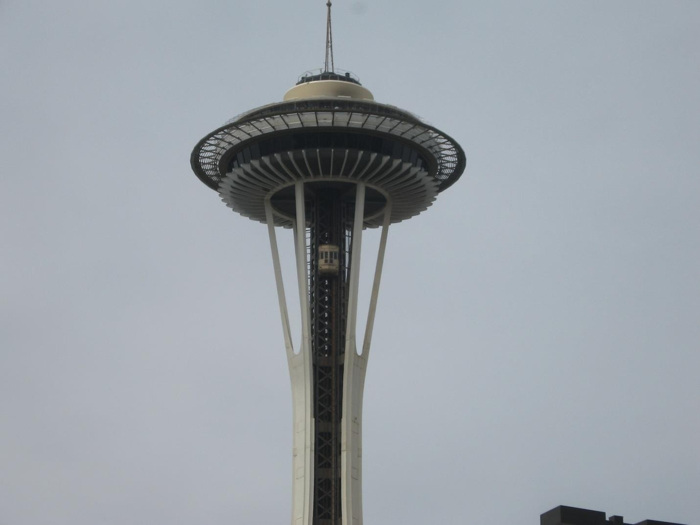
Ramamurthy and Geetha arrived from Washington DC. They came via Chicago. They reached Seattle at 10:30 pm. Uma and Shashi went to the airport to receive them. They arrived home around 11:30 pm. On 23/08/2017, we all went to Seattle. We visited the Space Needle center. We roamed around in that area. Also, we went to the market area and spent some time at the street shops. After the Space Needle, we went to the Carl S. English Jr. Botanical Garden and Hiram M. Chittenden Locks. We went to the garden and found a comfortable place and finished our dinner which we brought from home.
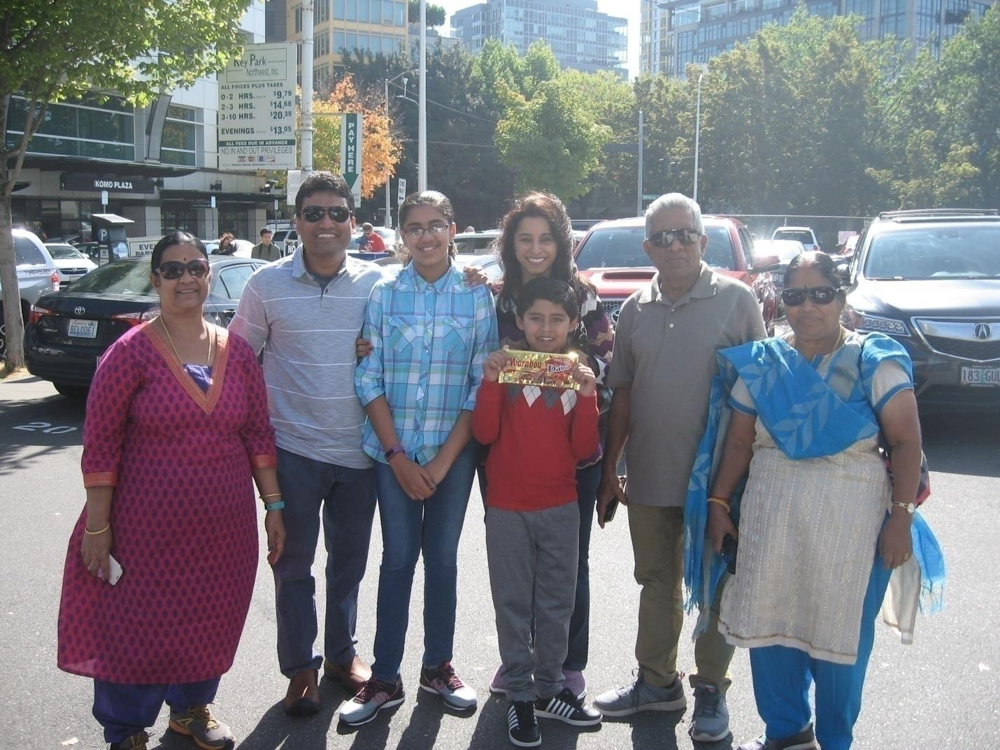
Then we went to see the Chittenden Locks. What is this lock? It is not something like door locks! The USA is a very big country. The east side border is the Atlantic Ocean and the west border is the Pacific Ocean. Because of these two big oceans, there are many Pugets (backwater) on the west side and east side. In this country, there are 50 states, and every state has many lakes. These lakes are very big and deep. Boats, cruises, and ferries sail in these lakes. In some places, it becomes necessary to connect a lake and a Puget. These two cannot be connected by a channel because of two reasons. One reason is the elevation difference; invariably, the lake and Puget are at different levels. The second reason: lake water is free from salt and Puget water is salty; if they are connected directly, lake water will also become salty and unusable for drinking and irrigation. So the lake and Puget are connected with a deep concrete chamber with two strong doors, one at each end. One of the doors is kept closed at all times. When ferries and boats are to sail to the Puget from the lake, the door on the Puget side is closed and the door on the lake side is kept open, and ferries and boats are allowed inside the chamber. Then the lake side door is closed, and now the water level in the chamber is at the same level as the lake. The water level of the chamber is brought down to the level of the Puget by draining water from the chamber through pipes provided externally. When the level is reduced to the level of the Puget, the door on the Puget side is opened and boats and ferries sail out to the Puget side.
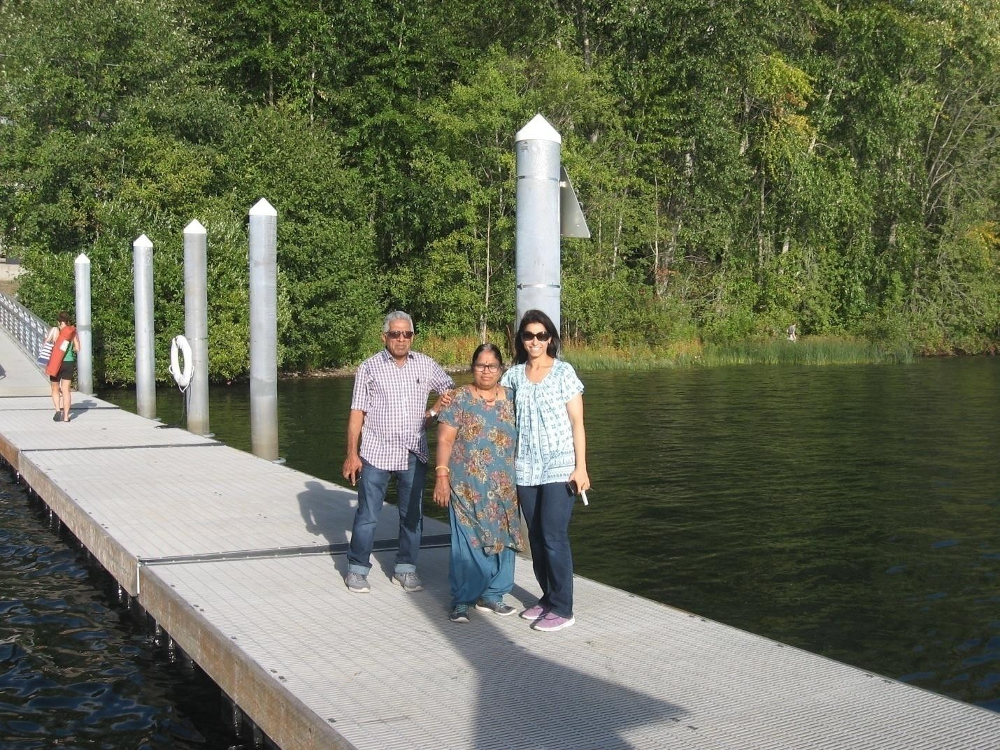
The reverse actions are done when boats and ferries are to sail from the Puget to the lake. After witnessing this, we returned home. Before coming home, we visited the LV temple (here Indians give initials to God also). This temple is called the LV temple, Lord Venkateshwara! After the visit to the temple, we returned home.